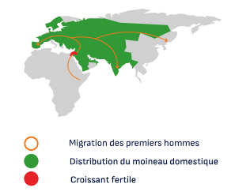

Introduction
De nos jours, et depuis les années 1970, on remarque une chute
démographique des moineaux dans nos villes et nos campagnes. On
parle de la disparition de 247 millions de moineaux domestiques en
Europe depuis 1980. Mais ce problème, bien que connu, ne fait pas
énormément parler de lui et ceux qui en ont conscience n’agissent
pas forcément. Ce manque d’attention et d’action vis-à-vis de cette
espèce est un exemple clé du manque d’attention de l’humain face
la nature qui l’entoure.
Dans ce mémoire, nous constaterons la fragilité des moineaux et
de leur milieu de vie dans nos villes. De plus, nous verrons pourquoi
le changement de notre mode de vie délaisse cette espèce
commensale obligatoire de l’homme et nous questionne sur les
mécanismes qui pourraient faire agir le grand public pour préserver
cette espèce. Comment pourrons-nous adaptez notre mode de vie à
celui des moineaux pour leur laisser une place dans nos villes et nos
campagnes et ralentir ou arrêter leur désertion ? Quels mécanismes
pourraient nous faire prendre conscience de la vulnérabilité des
moineaux pour le déclenchement d’une action individuelle ?
Après la recoupe d’informations, de jeux de données, de témoignages
aux seins d’organismes de recherches, nous verrons comment
nous pouvons retranscrire des données et des enjeux pour le
déclenchement d’une conscience écologique et d’une action
individuelle.
Pour résoudre cette problématique, dans un premier temps, nous
parlerons de la vulnérabilité des moineaux en montrant pourquoi ils
sont dépendants de l’homme et pourquoi ils quittent leur nid dans les
villes. Dans un second temps, nous viendrons proposer des moyens de
préservations en listant les actions bénéfiques pour les moineaux et
comment l’Homme inclura leur présence au sein de nos villes.
Indice moineaux / Paris / Par secteurs
Commensale obligatoire : Littéraire. Personne qui mange (habituellement) à la même
table qu’une autre ; compagnon de table ; hôte.
1/ dépendance à l’être humain
On constate, depuis l’avènement de l’agriculture, que le moineau
domestique, comme son nom l’indique, est resté dans le sillage de
l’homme. Lui aussi originaire du croissant fertile, il a trouvé le couvert
et le logis chez l’homme qui lui assurait une certaine “sécurité” au
quotidien. On parle d’une espèce commensale obligatoire de l’homme,
c'est-à-dire qu’il mange à la même table que celui-ci, entre céréales
et insectes du potager. Au fil du temps, le moineau a su modifier
ses habitudes au fur et a mesure des évolutions de la productivité
agricole. Comme le décrit Glenn-Peter Sætre dans son travail de
recherche, les humains ont un impact important sur la distribution
et l'abondance d'une série d'organismes dans le monde. Bien que
les activités humaines aient un aspect négatif sur de nombreux
organismes, certaines espèces ont profité de nos habitats artificiels
et ont évolué pour s’adapter. Le moineau, pour parfait exemple, est
devenu sédentaire et son espace de vie de ce fait n’avait pas besoin
d’être excessif (de 50m à 100m entre la zone de nidation et la zone
d’alimentation). C’est pour cela que cette espèce à commencer à
nicher sur les façades de nos habitations, nous débarrassant de
nuisible (insectes et mauvaises herbes) tout en profitant de notre
apport (graines).
Mise en relation de la migration de l’homme et de la distribution des moineaux domestiques
Commensale obligatoire : Littéraire. Personne qui mange (habituellement) à la même
table qu’une autre ; compagnon de table ; hôte.
La distribution : En écologie, la distribution (aire de distribution) désigne la répartition
géographique des êtres vivants, animaux ou végétaux, par unité d’espace.
L’abondance : En écologie, l’abondance d’un organisme est le nombre total de cet
organisme ou le nombre d’organismes par unité d’espace.
2/ désertion des villes
Depuis les années 1970, on constate que la population des moineaux a
diminuée de 75% dans nos grandes villes. Cette chute démographique
est due à plusieurs changements de notre mode de vie, et de
nos modes de production agricole. Par ailleurs, la relation entre
citadins et oiseaux est complexe, l’animal inspire de l’admiration
tout comme une aversion (excrément, maladie...). Après avoir vécu
une collaboration paisible avec l’homme, de presque 9000 ans, le
moineau voit son quotidien chambouler par l’industrialisation de
l’agriculture, l’utilisation de produits phytosanitaires, l’augmentation
de la pollution (sonore, de l’air, lumineuse, métaux lourds), le
dérèglement climatique, l’augmentation du trafic routier, le manque
de graine et d’insectes, l’augmentation des prédateurs et d’espèces
concurrentes, le manque d’espaces vert. Mais son plus gros problème
est la rénovation de l’habitat de l’homme, de plus en plus courante qui
change les façades pour moins d’aspérités, et de cavités qui étaient
pour le moineau un habitat artificiel, mais parfait. Cette disparition
de zone de nidation pour le moineau domestique est un vrai coup de
grâce pour sa stabilité et sa prospérité. La relation des citadins et
des oiseaux augmente encore les difficultés pour les moineaux. Par
exemple, il n’est pas rare dans nos métropoles de voire toute sorte de
mobiliers anti-volatiles et de procédés dangereux pour nos oiseaux
pour les faire fuir de nos centres-villes. Cette vision négative des
animaux de nos villes ne favorise pas la réinsertion de la biodiversité
au sein de celle-ci.
Schéma explicatif des besoins du moineau
lors de la nidation
Démonstration des mauvais geste/utilisation
du mobilier anti-volatile
Produits phytosanitaires : Un produit phytosanitaire, est une substance utilisée
en agriculture pour protéger les plantes cultivées ou pour optimiser les cultures en
favorisant leur croissance.
1/ Agir pour le bien des moineaux
Que pouvons-nous faire pour sauvegarder la population des moineaux
dans nos villes ?
Pour ralentir la chute démographique de cette espèce, il est
important de souligner que les véritables enjeux de biodiversité sont
dans les mains des décideurs (maire, député, …). Il faudrait repenser
la politique écologique pour une réelle inversion. La LPO et la mairie
de Paris ont édité un PDF, en libre-service sur internet, résumant
les besoins du moineau. Chacun peut consulter ce document, mais
seuls ceux qui sont déjà sensibilisés s’y attardent. D’autre part, des
formations existent pour les travailleurs du bâtiment (architectes,
entreprises, …). Chaque partie, travailleurs et particuliers, pourraient
se concerter pour s’assurer que les travaux des lieux de vie sont
en adéquation avec la protection de la biodiversité. Peut-êtres que
les collectivités locales (ou l’état) pourraient fortement inciter les
aménageurs à respecter ces conseils. Cependant, il est du devoir
citoyen de montrer l'exemple. Chacun peut intervenir à son échelle
par la végétalisation de son balcon, par exemple, ou par la prise en
charge de pieds d’arbre en ville.
Réception du nichoir par un habitant
du quartier
localisation du nichoir (point bleu) >
2/ Accorder une place aux moineaux en villes
Nous sommes désormais entrés dans l’Anthropocène aujourd’hui, il
est en conséquence primordial pour l’homme d’inclure la biodiversité
et d’agir dans nos villes pour sauvegarder et préserver la faune
et la flore. C’est alors qu’on se demande comment, préserver la
biodiversité dans nos villes. Par exemple à Paris, la mairie distribue
nichoir et graines à semer et à placer au balcon et jardin dans
certains quartiers. L’idée ici, c'est de responsabiliser les riverains à
investir leurs façades d’un nouvel habitat artificiel pour les moineaux
en leur donnant de quoi les nourrir et les loger. Comme le plus
grand problème reste de trouver des zones de nidation contenant
le nécessaire dans les environs (nourriture, nid, zone sociale), la
pose de nichoir ne suffit pas, c’est pourquoi il est préférable de
végétaliser ses balcons ou partie commune. Mais avant tout chose,
pour accorder une place aux moineaux dans nos villes, c'est d’abord
vers nous même et notre rapport à la biodiversité qu’il faut se tourner,
je pense qu’il faut repenser les interactions et les impacts entre
nos modes de vie et la nature. Dans cette dynamique, le travaille
de Jérôme Boissière, correspond parfaitement au lien nécessaire
entre urbanisme et nature. Il propose un aménagement de fenêtre
(”le pré-cadre refuge”) qui concerve l’accès exterieur aux habitants
est propose une instalation comportant divers éléments nécessaire
à la survie des oiseaux (végetalisation/abris pour insectes). De
plus Jérôme a souhaité que le pré-cardre refuge demande peu
d’entretien pour laisser la nature libre, qu’il soit un outil d’observation
et de sensibilisation, le tout en respectant les principes de l’écoconception.
Son idée est donc de s’intégrer aux façades des immeubles, notamment ceux ne
possédant pas de balcons. Ainsi, il démontre qu’il est possible de se servir
du cadre urbain comme d’un atout bénéfique, afin de mieux vivre en harmonie
avec la nature. Projet de Jérôme Boissière «pré-cadre refuge»
Frise chronologique datant
les acteurs de l’anthropocène
L’Anthropocène : Par le terme « Anthropocène », on désigne la nouvelle époque géologique
dans laquelle nous sommes récemment entrés et qui se caractérise par la pression
sans précédent que les humains font peser sur l’écosystème terrestre.